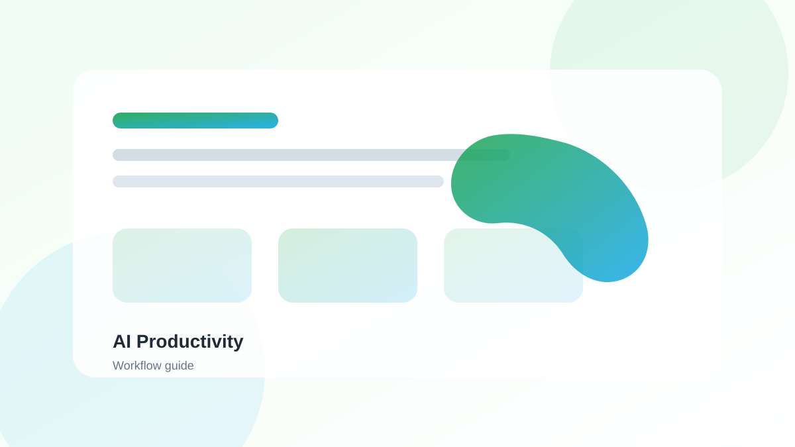
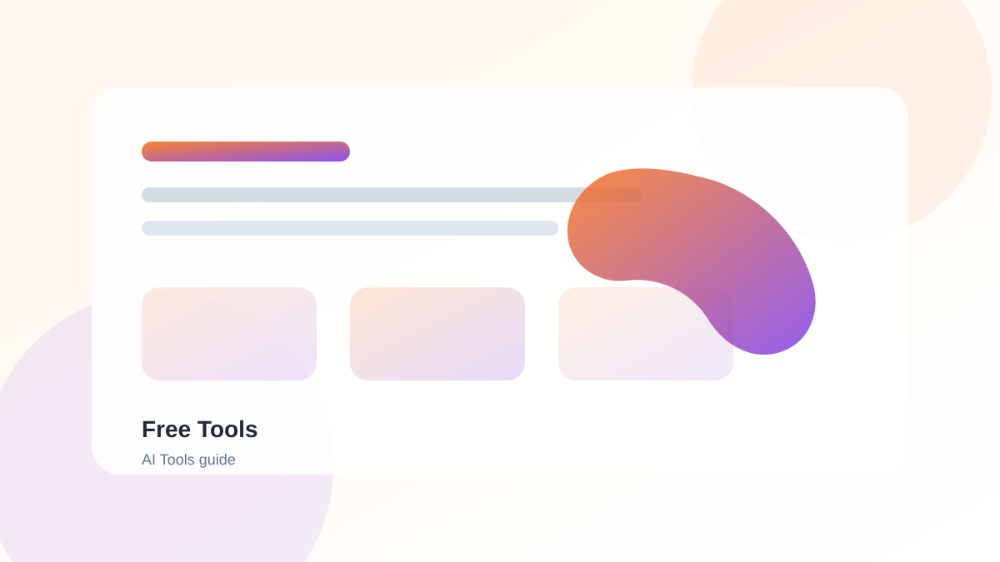

Introduction
With the proliferation of AI tools available today, choosing the right one can be overwhelming. Whether you're looking for writing assistance, productivity tools, or creative aids, finding the perfect fit requires careful consideration. This guide will walk you through the process of selecting the best AI tool for your specific needs.
Why Choosing the Right Tool Matters
Selecting the right AI tool can have a significant impact on your productivity and workflow. The wrong tool can waste time, frustrate users, and even hinder progress. Here's why it matters:
- Efficiency: The right tool saves time and improves workflow
- Quality: Better tools produce better results
- Cost: Avoid wasting money on tools that don't meet your needs
- User Experience: A good tool is intuitive and enjoyable to use
Advertisement Space
Step 1: Identify Your Needs
Before you start evaluating tools, you need to understand what you're trying to accomplish. Ask yourself these questions:
- What problem are you trying to solve? Be specific about your pain points
- Who will be using the tool? Just you, or a team?
- What's your budget? Free, freemium, or enterprise?
- What integrations do you need? Does it need to work with other tools?
Step 2: Evaluate Key Features
Once you understand your needs, evaluate tools based on these key factors:
1. Core Functionality
Does the tool do what you need it to do? Make sure it has the specific features you're looking for.
2. Ease of Use
Is the tool intuitive? Do you need extensive training to use it effectively?
3. Integration
Does it integrate with tools you already use? This can save time and improve workflow.
4. Pricing
Is the tool within your budget? Does it offer flexible pricing options?
5. Support and Documentation
Does the tool offer good customer support and documentation?
6. Security and Privacy
Does the tool handle your data securely? This is especially important for sensitive information.
Quick Tip
Create a checklist of your must-have features before evaluating tools. This will help you stay focused and avoid being swayed by unnecessary features.
Step 3: Test the Tool
Once you've narrowed down your options, test the tools to see which one works best for you:
- Free Trials: Take advantage of free trials to test the tool
- Use Cases: Test the tool with your actual use cases
- Compare: Compare multiple tools side by side
- Get Feedback: If it's for a team, get input from other users
Advertisement Space
Common Mistakes to Avoid
- Choosing based on hype: Don't choose a tool just because it's popular
- Ignoring integration: Make sure the tool works with your existing workflow
- Overlooking security: Don't compromise on data security
- Not testing: Always test before committing
FAQ
How many tools should I test before making a decision?
It depends on your needs, but we recommend testing 3-5 tools to get a good comparison. Too many can be overwhelming.
Should I prioritize features or ease of use?
Both are important, but if a tool has all the features you need but is difficult to use, you won't use it effectively. Find a balance.
Is it better to choose an all-in-one tool or specialized tools?
It depends on your workflow. All-in-one tools can be convenient, but specialized tools often offer more depth in their specific area.
How do I know if a tool is worth the investment?
Calculate the ROI - how much time/money will it save you compared to the cost? If the benefits outweigh the cost, it's likely worth it.
Conclusion
Choosing the right AI tool requires careful consideration of your needs, evaluation of features, and hands-on testing. By following this process, you can find tools that truly enhance your productivity and help you achieve your goals. Remember, the best tool is the one that works for you and your unique workflow.
Related Guides

Best AI Tools for Productivity in 2026
Discover tools that transform your workflow this year.
Read Guide ->
Best Free AI Tools for Beginners
Start your AI journey with these powerful free tools.
Read Guide ->
Best AI Writing Tools for Blog Posts
Elevate your content creation with AI writing assistants.
Read Guide ->